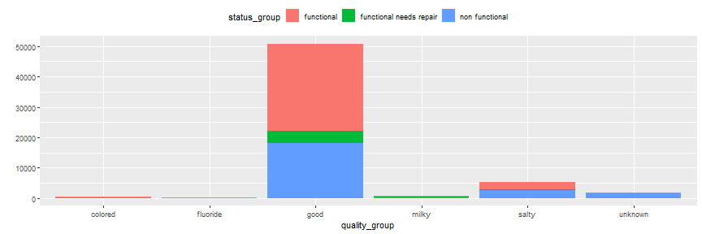
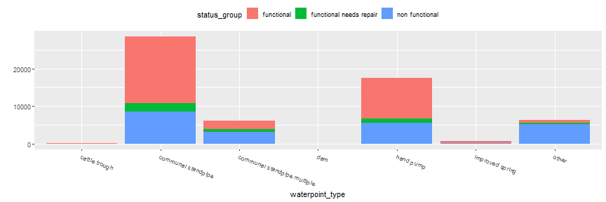
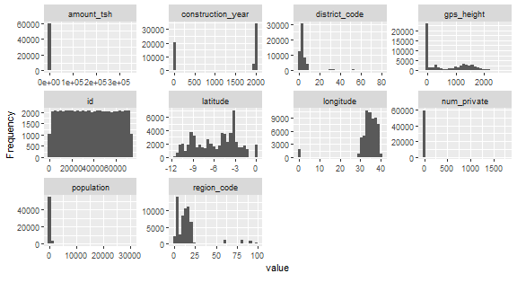
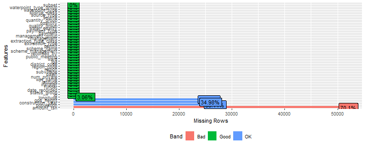
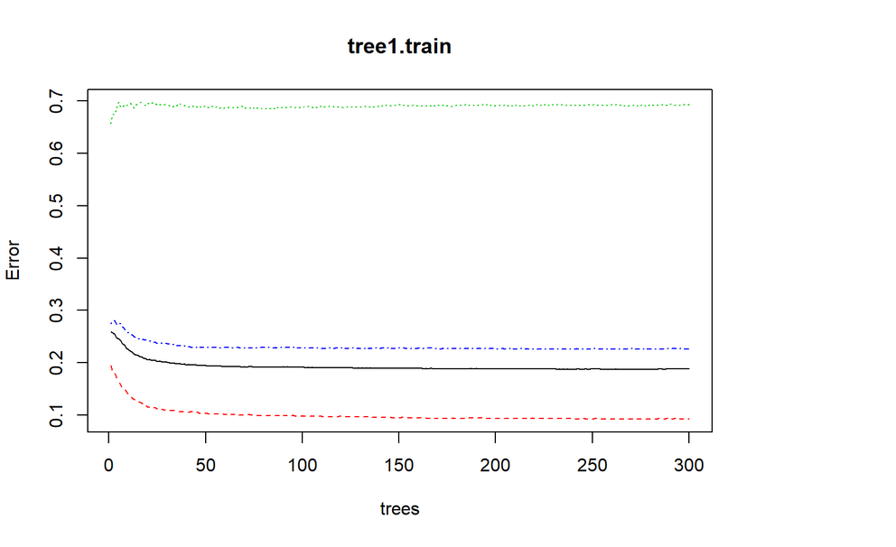
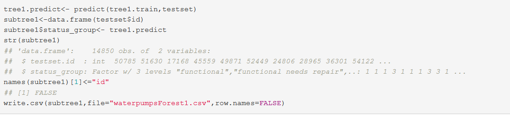

Pump it Up - Data Mining the Water Table
Project - Big Data Spring 2020 - SGH
Simon Weiss
Graduate Student - Erasmus
Overview
- What led me to this project ?
- Goals for this presentation
- Problem Description
- Data processing
- EDA
- Feature Buildings
- Model Buildings
- Comparing models
- Conclusion
- References
What led me to this project ?
- Wanted to apply Big data method on the humanitarian sector and create an analytic value around one current issue.
- Found a rich dataset provided by Driven Data offering an open challenge until 2021 with data compiled from http://taarifa.org/ website and the Tanzanian Ministry of Water.
- Participate in an open - data challenge online.
- Build a data stand-alone project which responds to Project requirements and that makes first conclusions about predictions and highlights future improvements to be made to the scripts to improve model performance
Goal of this presentation
- Present major steps required for project requirement
- Present you the framework I implemented to handle one online data challenge and receive advice if any to improve it !
I had a little more time to prepare this presentation. I have used the package Slidify which is a tool to create, customize and publish, reproducible HTML5 slide decks using R Markdown.
You can follow this slide within your browser by clicking to this [link]. I will ask you a small participation in a slide !
"Water is at the core of sustainable development and is critical for socio-economic development, energy and food production, healthy ecosystems and for human survival itself" UN Website - 2020
Problem Description
The original goal is to predict whether a water pump is functional, functional but needs repairs or non functional based on a train dataset.
This is an intermediate-level practice competition which allow us to train us to predict the operating condition of a water-point for each record in a dataset.
A smart understanding of which water-points will fail can improve maintenance operations and ensure that clean, potable water is available to communities across Tanzania.
Faced to an unsupervised classification problem
The metric used for the competition is classification rate ( percentage of rows where the predicted class y in the submission matches the actual class y in the test set).
An example of a Water Pump - http://www.humanosphere.org/

I hope it is all clear from now. Let's dig it !
Data processing
- Get the data.
- Usually, a data challenge provides a train and test datasets with test dataset target empty. Here the website, has separated train value and train labels ...
train_value <- read.csv("Trainingset_values.csv")
train_labels <-read.csv("Trainingset_label.csv")
test_values <- read.csv("Testset_value.csv")
- We merge the train value and the train label ...
train <- merge(train_labels, train_value)
test <- test_values
- and plot the first 6 rows of our train dataset.
The labels in this dataset are simple. There are three possible values:
Name Description functional the waterpoint is operational and there are no repairs needed functional needs repair the waterpoint is operational, but needs repairs non functional the waterpoint is not operational Let us describe the number of each pumps in status group and their proportions :
Unbalanced dataset?functional functional needs repair non functional 32259 4317 22824 functional functional needs repair non functional 0.54308081 0.07267677 0.38424242
- Our dataset is pretty balanced but we can already notice that we have a great number of Missing values. We will see in future part how I managed it. First, let us do some EDA in order to better understand our data.
Exploratory Data Analysis
- Create 2 bar plots for quantity


Create bar plot for quality_group 
Create bar plot for water point_type

- Create histogram for all variables

- Create a histogram for construction_year grouped by status_group

Feature Buildings
Features building was maybe one of the most important part of my project.
Very often in challenges, this part is a key part, allowing the models to really find performance. In order, we will address the following problems: reducing factor levels, handle missing and empty values.
For feature engineering, it is better to combine training and the test sets together into one dataset. So I added a column subset in order to split the data later.
train$subset = "train"
test$subset = "test"
test$status_group<-""
data = rbind(train,test)
Reducing factor levels
names(data)
The data table contains an
ID column, a subset indicator, a response column (status_group is functional, functional needs repair or non functional) and 38 features.Based on their names , we could conclude that some features have the same information but maybe at different levels (for example, extraction_type and extraction_type_group).
For each grouping of features, we will keep both the coarser and the finer variables but group some of the smaller levels together so that categorical predictors have minimum levels.
- First, we will reduce factor levels if the number of a factor is small and thus irrelevant.This code shows us in descending order of n the frequency of each factor level and then we have the proportion.
data %>%
group_by(extraction_type_class, extraction_type_group, extraction_type) %>% tally(sort=TRUE)
## # A tibble: 18 x 4
## # Groups: extraction_type_class, extraction_type_group [13]
## extraction_type_class extraction_type_group extraction_type n
## <fct> <fct> <fct> <int>
## 1 gravity gravity gravity 33263
## 2 handpump nira/tanira nira/tanira 10205
## 3 other other other 8102
## 4 submersible submersible submersible 5982
## 5 handpump swn 80 swn 80 4588
## 6 motorpump mono mono 3628
## 7 handpump india mark ii india mark ii 3029
## 8 handpump afridev afridev 2208
## 9 submersible submersible ksb 1790
## 10 rope pump rope pump other - rope pump 572
## 11 handpump other handpump other - swn 81 284
## 12 wind-powered wind-powered windmill 152
## 13 handpump india mark iii india mark iii 135
## 14 motorpump other motorpump cemo 108
## 15 handpump other handpump other - play pump 101
## 16 handpump other handpump walimi 60
## 17 motorpump other motorpump climax 41
## 18 handpump other handpump other - mkulima/shinyanga 2
prop.table((table(data$extraction_type_class)))
##
## gravity handpump motorpump other rope pump submersible
## 0.447986532 0.277602694 0.050868687 0.109117845 0.007703704 0.104673401
## wind-powered
## 0.002047138
We decide to class the small level to "other", meaning rope pump, wind-powered to other.
data$extraction_type_class[data$extraction_type_class=="rope pump"] <- "other"
data$extraction_type_class[data$extraction_type_class=="wind-powered"] <- "other"
We will remove middle level extraction_type_group and combine some of the smaller levels.
data = data %>%mutate(extraction_type = revalue(extraction_type,
c("cemo" = "other motorpump",
"climax" = "other motorpump",
"other - mkulima/shinyanga" = "other handpump",
"other - play pump" = "other handpump",
"walimi" = "other handpump",
"other - swn 81" = "swn",
"swn 80" = "swn",
"india mark ii" = "india mark",
"india mark iii" = "india mark"))) %>%select( - extraction_type_group )
- I have done the same process for following variables : "quality_group", remove waterpoint_type_group., payment_type, Scheme_name, recorded by, ward variable and wpt-name, subvillage, lga.
Remove Missing value
- One difficulty in our dataset is that there is no clear missing values but only zeros. However, for some variables, it seems that having 0 in observation is not possible and can be seen as a missing value :
funder, installer, gps_height, population, construction_year, and possibly, amount_tsh, latitude and longitude (given to the fact that Tanzania geographical position). We should re-code those variable to NA.
data = data %>%
mutate(gps_height = ifelse(gps_height == 0, NA, gps_height)) %>%
mutate(population = ifelse(population == 0, NA, population)) %>%
mutate(amount_tsh = ifelse(amount_tsh == 0, NA, amount_tsh)) %>%
mutate(longitude = ifelse(longitude == 0, NA, longitude)) %>%
mutate(latitude = ifelse(latitude == 0, NA, latitude)) %>%
mutate(construction_year = ifelse(construction_year == 0, NA, construction_year))
- Let us plot missing values distribution. 
- We can observe that amount_tsh has a lot of NA and this variable is not very clear for the reader. We should remove it.
data = data %>% select( - amount_tsh)
Then we have population and gps_height variables with more than 30 % of NA. Since these last variables contain important information, we should keep them.
Since we will use Random Forest models, we have to re-code NA values to zeros.
data[is.na(data)] <- 0
We still have empty rows that we should resolve.
data$permit<- as.character(data$permit)
data$permit[data$permit==""]<-"unknown"
data$permit<-as.factor(data$permit)
data$scheme_management<- as.character(data$scheme_management)
data$scheme_management[data$scheme_management==""]<-"unknown"
data$scheme_management<-as.factor(data$scheme_management)
data$public_meeting<- as.character(data$public_meeting)
data$public_meeting[data$public_meeting==""]<-"unknown"
data$public_meeting<-as.factor(data$public_meeting)
This ends our feature feature building part. I tried to take time for this part in our presentation as it important in data competition and in order to share methods.
We are now ready to build our models !
Building models
First, we should unsplit data to build our final dataset and clean our environment for a peaceful mind.
trainset<-data[data$subset=="train",]
testset<-data[data$subset=="test",]
trainset<-trainset[-28]
testset<-testset[-28]
rm(train)
rm(test)
rm(test_values)
rm(train_labels)
rm(train_value)
When I applied my first models, it should be noted that I faced a factor and subseting problem. I found a solution by applying str and drop levels to our unsplit datasets.
str(data$status_group)
str(trainset$status_group)
str(trainset$status_group)
table(data$status_group)
table(trainset$status_group)
table(trainset$status_group)
trainset$status_group<-droplevels(trainset$status_group)
table(trainset$status_group)
Tree 1 : Random Forest
Random Forest reduces the variance of forecasts in a decision tree alone, thus improving performance. It does this by combining n decision trees in a bagging approach. We don't prune the tree. Each tree in the random forest is trained on a random subset of data. The predictions are then averaged.
I have build model on the train dataset with following parameters :
randomForest(status_group~.,data=trainset, ntree=300, do.trace=T)
- This graph comes from our first model and plot the importance of variable in our model.

- The second graph shows the evolution of error compared to the number of trees.

- We can apply our models on our testset and create our first submission file.

We will see in our last part what were the results.
In order to compare the models, we will build another Tree.
Tree 2 : Boosted Tree
Here we will use Boosted Tree aka XGBoost. XGBoost is a well-known and efficient open source implementation of the improved gradient tree algorithm.
We are building a tree and looks which value is predicted poorly and assign to it higher weigh in our prediction.
Let us build and predict our model with 1000 maximum number of boosting iterations with following parameters : xgboost::xgboost(data=data.matrix(trainset[,-2]),label=trainset[,2],nrounds=1000,params=list(booster="gbtree", eta=0.10, max_depth = 3, subsample = 0.50, colsample_bytree=0.50))
- Let's apply our model and create a second submission file.

Upload results and Comparing models
I upload first submission of Random Forest to the Driven Data Platform

- For recall, Primary Evaluation Metric is Classification Rate
\[
\frac{1}{N} \sum_{i=0}^N I(y_i = \hat{y_i})
\]
It calculates the percentage of rows where the predicted class y^ in the submission matches the actual class, y in the test set. The maximum is 1 and the minimum is 0. The goal is to maximize the classification rate.
- Before we see finally our results, a quick quiz !
Quiz : Random Forest performance
In your opinion, according to this presentation, what is the rank x of our first model out of the 9000 registered on the platform to date?
- 1<x<1000
- 1000<x<3000
- 3000<x<9000
Our model didn't do so bad !

Quiz : Boosted Tree performance
In your opinion, according to this presentation, has Boosted Tree better results ?
- Yes
- No
Random Forest had 300 iteration when Boosted Tree had 1000 maximum number of boosting iteration.

Conclusion
-Our second tree returned a better metric with 0.8179. This small increase has moved us up 15 places in the competition.
-So Boosted Tree was the best Tree model to predict whether a water pump is functional, functional but needs repairs or non functional.
-I decided to stop here as the 2 models gave almost the same results meaning that one should move again to feature building (any recommendation or ideas is welcome) so as to maximize Classification Rate.
-Thank you for your attention !
References
- Dr Jaroslaw Jozef Olejniczak- Big Data - SGH Spring 2020
- Community of Driven Data https://community.drivendata.org/c/pump-it-up-data-mining-the-water-table
- Stack Overflow community
Questions ?

photo from http://www.bookcovercafe.com/independent-publishing-q-and-a-series-01/